AUSTRIA
BELGIUM
BULGARIA
CROATIA
CYPRUS
CZECH REPUBLIC
DENMARK
ESTONIA
FINLAND
FRANCE
GERMANY
GREECE
HUNGARY
ITALY
LATVIA
LITHUANIA
MALTA
NETHERLANDS
POLAND
PORTUGAL
ROMANIA
SLOVAKIA
SLOVENIA
SPAIN
SWEDEN
UNITED KINGDOM
- NEWS
-
OTHERS
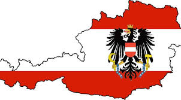
Austria a country in Europe
| FACTS ON AUSTRIA | |
|---|---|
| Capital: | Vienna |
| Political system: | Federal Parliamentary Republic |
| Language: | German |
| Currency: | Euro |
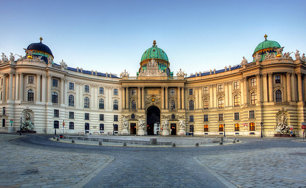
The spectacular Hofburg Palace in Vienna
was for centuries the seat of Austria's monarchy,
the powerful Habsburgs.
was for centuries the seat of Austria's monarchy,
the powerful Habsburgs.
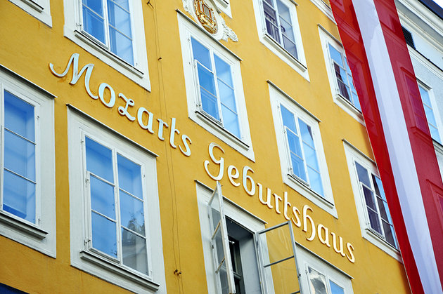
Numerous cities claim a connection to Wolfgang Amadeus Mozart, but few were as important to the
famous composer as Salzburg
famous composer as Salzburg
| FACTS ON HOFBURG PALACE IN VIENNA |
|---|
| Now the President conducts state business in the same rooms that once belonged to Emperor Joseph II. Nearly every Austrian ruler since 1275 ordered additions or alterations, resulting in many different architectural influences, including Gothic, Renaissance, Baroque, Rococo, and Classicism |
| Together with its squares and gardens, the entire Hofburg complex occupies 59 acres encompassing 19 courtyards and 2,600 rooms. |
| Highlights of a visit include the Imperial Silver Collection that once took place here; the Sisi Museum, focusing on the life and times of Empress Elisabeth; and the Imperial Apartments, a series of 19 rooms once occupied by Emperor Franz Joseph and his wife. |
| FACTS ON MOZART'S SALZBURG |
|---|
| It's here you'll find No. 9 Getreidegasse, the house where Mozart was born on January 27th, 1756 |
| Now a museum called Mozart's Birthplace, the rooms once occupied by his family are full of mementos, instruments, and portraits |
| Salzburg also hosts a number of music festivals in honor of the composer, including Mozart Week (Jan-Feb) and the six-week long Salzburg Festival (June-Aug). |
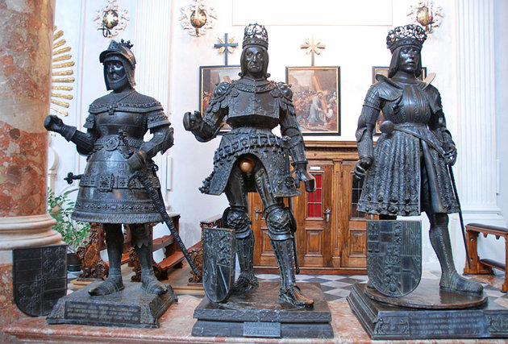
Widely considered the finest work of German Renaissance sculpture.
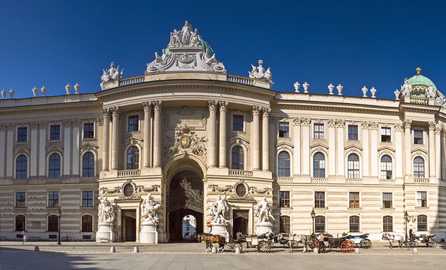
Today, it's the only place where the Classical style
of riding preferred by aristocracy is still practiced
of riding preferred by aristocracy is still practiced
| FACTS ON THE EMPEROR'S TOMB: HOFKIRCHE AND THE MUSEUM OF MAXIMILIAN I | Innsbruck is home to the Hofkirche, or Court Church, with its spectacular Tomb of Emperor Maximilian I who died in 1519. The monument's central feature is the massive black marble sarcophagus with a bronze figure of the Emperor. |
|---|
| On the sides of the sarcophagus are 24 marble reliefs depicting events in the Emperor's life, and around it stand 28 larger-than-life-size bronze statues of the Emperor's ancestors and contemporaries (look out for King Arthur). |
| Other pieces of sculpture include 23 bronze statues of saints from the Habsburg family and 20 bronze busts of Roman emperors. |
| FACTS ON THE SPANISH RIDING SCHOOL, VIENNA |
|---|
| The Spanish Riding School dates back to the time of Emperor Maximilian II, the man responsible for introducing the famous Lipizzaner horses into Austria in 1562. |
| Viewing the famous equestrian displays in the Baroque Winter Riding School - held here since the time of Charles VI - is a must when in Vienna. |
| Built in 1735, the magnificent hall was designed for the nobility to demonstrate their riding skills. Tickets are sought after, so book online as far in advance as possible. |
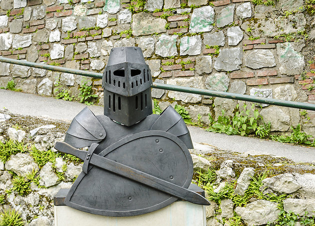
In the heart of Graz is the Landeszeughaus, the Styrian Arsenal.
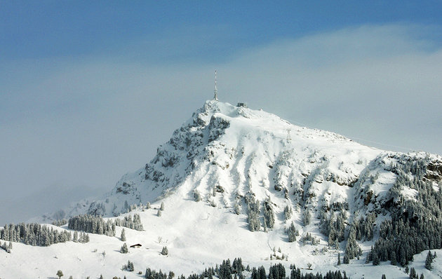
At 1,998 meters, the Kitzbüheler Horn in the Tyrol region is one of the most picturesque of
Austria's many summits.
Austria's many summits.
| FACTS ON THE STYRIAN ARMOURY(LANDESZEUGHAUS) |
|---|
| Built in 1644, the building houses a spectacular collection of completely preserved 17th-century arms and armor - enough, in fact, to arm 32,000 men, including helmets, and weaponry. |
| Built in Renaissance style in 1557-65 and with a main facade dominated by rounded windows and a veranda, it boasts a lovely arcaded courtyard with three-storied pergolas on two sides and a Renaissance fountain, while in the Knights' Hall there's a splendid stucco ceiling from 1746. |
| FACTS ON KITZBUHELER HORN |
|---|
| Accessible by cableway via the Pletzeralm or by climbing from the village of Kitzbühel, the summit affords glorious views: to the south from the Radstädter Tauern to the Ötztal Alps; to the north, the nearby Kaisergebirge; to the west, the Lechtal Alps; and to the east, the Hochkönig. |
| To the south of the Kitzbüheler Horn rises the 1,772-meter-high Hornköpfli, also reached by cableway. In addition to the great views, on the summit, you'll find the Gipfelhaus, a unique mountaintop home; a chapel; a restaurant; and an Alpine garden. |
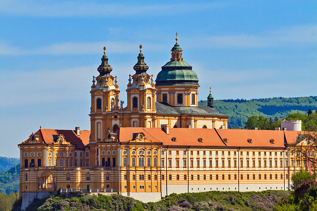
Melk Abbey is one of the world's most famous monastic sites, and its spectacular buildings are
laid out around seven courtyards.
laid out around seven courtyards.
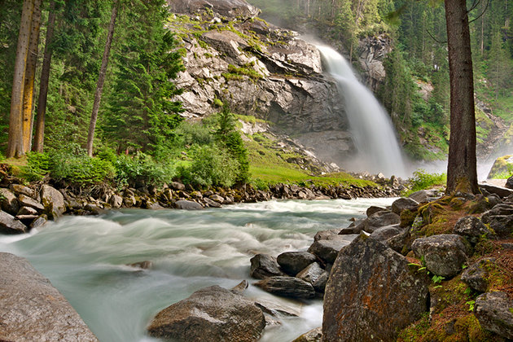
Austria's Tallest Waterfalls
| FACTS ON MELK BENEDICTINE ABBEY |
|---|
| The most prominent part of this massive 325-meter-long complex is the west end and its twin-towered church rising above a semicircular terrace range. |
| Perched on a rocky outcrop high above the town of Melk and overlooking the Danube, the abbey contains numerous other great reasons to spend a few hours touring it: the tomb of Saint Coloman of Stockerau; the remains of Austria's first ruling family, the House of Babenberg; the superb 196-meter-long Imperial Corridor with its portraits of Austria's rulers, including one of the Empress Maria Theresa; and the Imperial Rooms with their displays relating to the abbey's history, along with statues and paintings. |
| FACTS ON KRIMMLER ACHE |
|---|
| The Krimmler Ache plunges 380 meters in three tremendous cascades and makes for an excellent excursion from the nearby village of Krimml. |
| At an altitude of 1,076 meters, Krimml - perched high above the Salzachtal in a wooded valley - is a wonderful place to stop for a few days if you're into hiking, there's a rewarding climb to the Schettbrücke and continuing to the spectacular Krimmler Tauernhaus. From here, expert climbers can tackle the 2,911-meter-high Glockenkarkopf on the Italian frontier. |
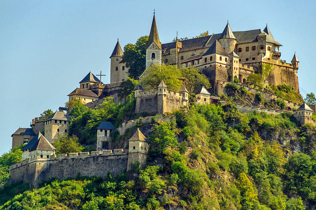
To the east of St. Veit, on a crag rising some 160-meters above the valley, sprawls the imposing
Burg Hochosterwitz, Austria's most important medieval castle
Burg Hochosterwitz, Austria's most important medieval castle
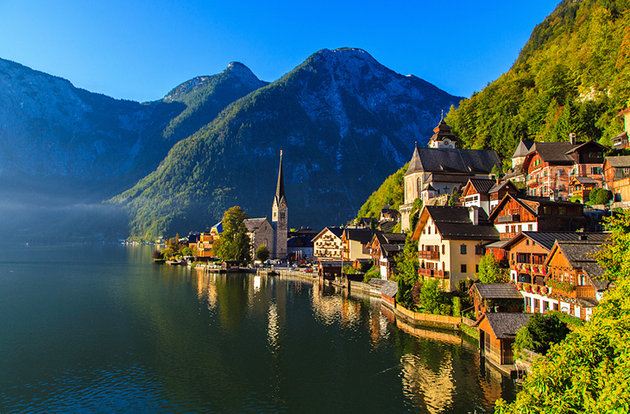
Hallstatt, undoubtedly one of the most picturesque small towns in Austria, is a good place from which
to explorethe spectacular Dachstein Salzkammergut region, a UNESCO World Heritage site.
to explorethe spectacular Dachstein Salzkammergut region, a UNESCO World Heritage site.
| FACTS ON MEDIEVAL BURG HOCHOSTERWITZ |
|---|
| After a turbulent history, the castle - first mentioned in 860 AD - was captured by the Khevenhüllers, and was enlarged in 1570 in the face of Turkish invaders. Never captured by a foe, the castle has remained in the Khevenhüller family since. |
| The steep access road to the castle, the Burgweg, winds its way up through the 14 defensive gates to the beautiful arcaded courtyard where you'll find the little chapel with its wall and ceiling paintings from 1570 and the church at the southwestern end of the castle with its high altar dating from 1729. |
| FACTS ON DACHSTEIN SALZKAMMERGUT AND THE GIANT ICE CAVE |
|---|
| You'll be rewarded with a chance to explore the Dachstein Caves, one of Europe's most impressive cavern networks, which are, in places, up to 1,174 meters deep. |
| Highlights include the Giant Ice Cave with its sub-zero summer temperatures and huge caverns with magnificent frozen waterfalls, and the Mammoth Cave with its huge pipe-shaped galleries formed by an ancient underground river. Above ground, visitors can tackle the superb 5 Fingers viewing platform, an incredible metal structure hanging over a 400-meter sheer drop with excellent views of the surrounding Alps. |